Imagine that every time your phone was turned off or ran out of power, when you turned it back on it got a new number.
How would anyone be able to call you?
Devices are joining and leaving the Internet all the time. IP addresses don’t stay constant. If you go to a coffee shop or restart your browser, your device might be assigned a new IP address.
If IP addresses are switching, it’s very hard for each computer to keep an accurate list. It would make more sense if there were one system that kept track of all that information.
If we want the Internet to scale up to billions of devices, then we need a better way to figure out one another’s IP addresses!
As we watch the following video, use the Video Guide to take note of:
Drag each word from the word bank onto the blank where it belongs.
The , or DNS, is a network of that track the of different domain names like .
When you visit a website you first ask the DNS for the IP address of the domain you want to visit.
True or false: the DNS system allows billions of devices to join the network without putting pressure on any one computer or server to know all the IP addresses in the world.
Before we begin the next activity, let’s choose a theme for the files you’ll be fetching.
http://dahlem1/transparent-bitdahlem1 in this picture.1.15.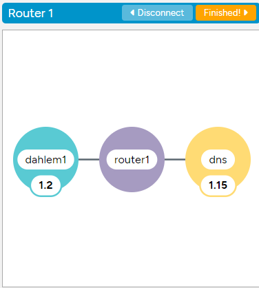
You’ll use this site along with the Internet Simulator, so keep both open side by side so you can switch back and forth quickly.
Click here to open bits.mycode.run in a new tab.
You’ll need access to both tabs at the same time. Drag the ActiveBits tab to the right side of your screen and code.org to the left side of your screen.
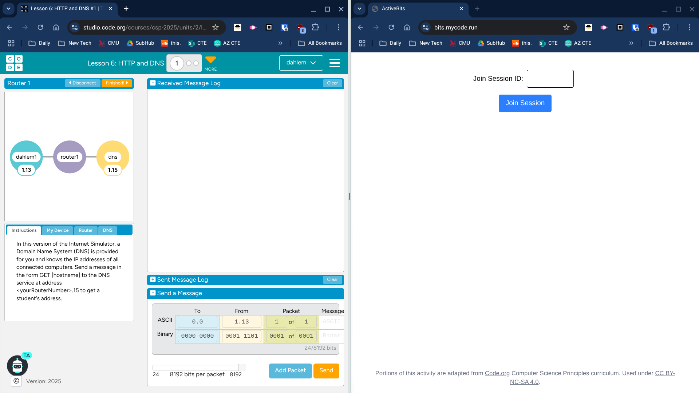
You’ll have two roles in this activity.
You will host several different files that other clients will need. When someone sends you a GET for a file, click the button to copy the file, then send it to them in a packet on the Internet Simulator.
Use the DNS in the Internet Simulator to find IPs for the hosts serving your files. Send a GET request for each file you need to the correct host.
Rules: No talking during the main round — use only the protocols! Use Code.org’s Internet Simulator to send GET messages for DNS and files.
Look at your ActiveBits tab. It has two parts: the Server and the Browser.
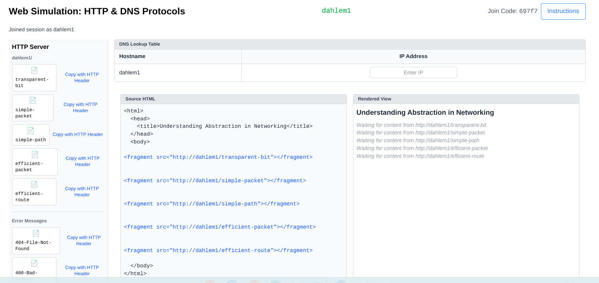
In your Source HTML, look for the first fragment. You should see something like:
<fragment src="http://dahlem1/transparent-bit"></fragment>This tag specifies that the web page needs a file from that URL. Your job as the browser is to get this file to fill the fragment.
Your first step is to figure out who to ask for the file. The hostname in the URL tells you — here, that’s dahlem1. You need that host’s IP address, and you’ll get it from your DNS server.
Address a packet to your DNS with the format GET hostname. It will respond with the IP address.
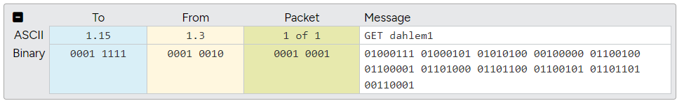
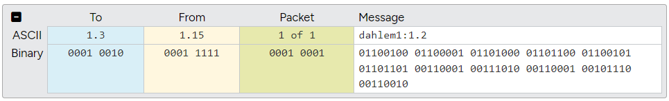
With the IP address of the server, put it in your DNS Lookup Table, then ask the server for the file.
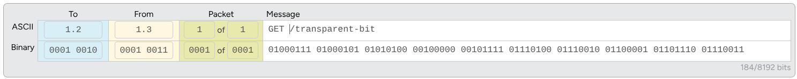
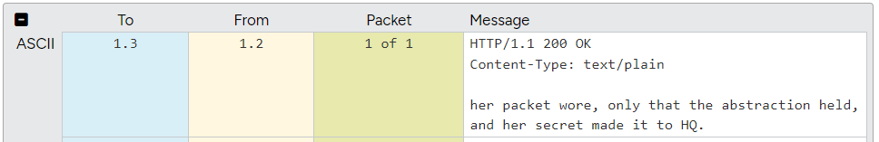
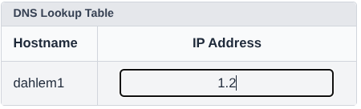
Now that you have the file from the server, copy its content into the Source HTML. Hover your mouse over the fragment and a box will appear.
The server includes headers (metadata that helps the browser with the transfer) above the actual file data. Only copy the content, not the headers — when you click Check, the fragment turns green if the correct piece was pasted.
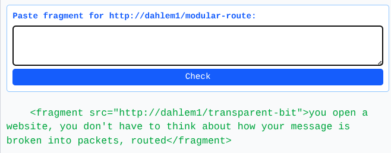
Oh wait! You just got a message asking you for a file. As the server, it’s your job to send it back.
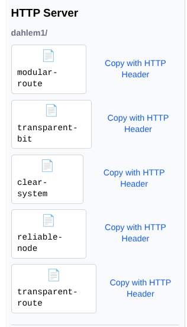
But I don’t have that file! If the browser requests a file you don’t have, or makes a request that doesn’t follow the protocol, you can send them an error message instead.
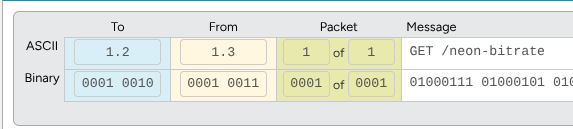
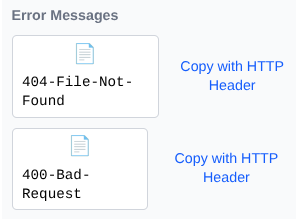
Thanks to the DNS, we can talk to other people even if we don’t know their IP addresses. This system is built entirely on all the other layers below it.
When you talk to the DNS you’re still sending information over the network, so you still need to know the IP address of a DNS server! You send the DNS a message that gets turned into packets and routed using UDP or TCP and IP.
As we watch this video, use the Video Guide to take notes on the HTTP protocol.
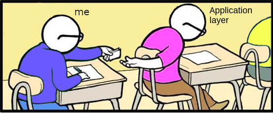
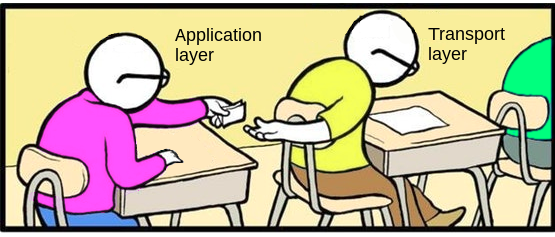
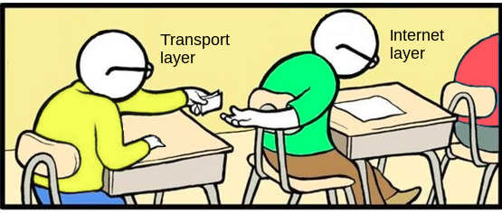
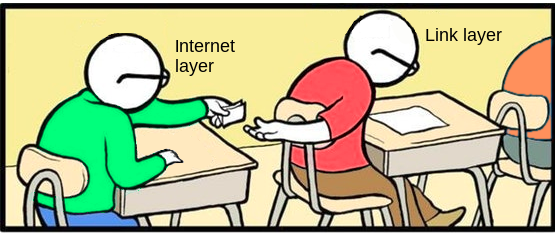
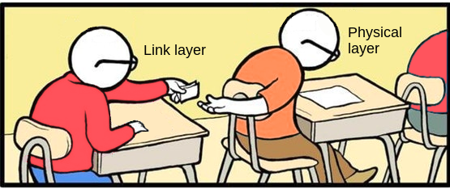
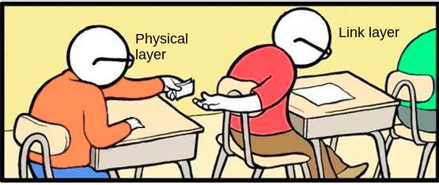
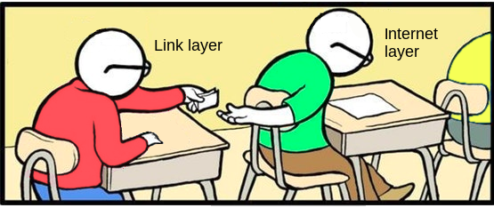
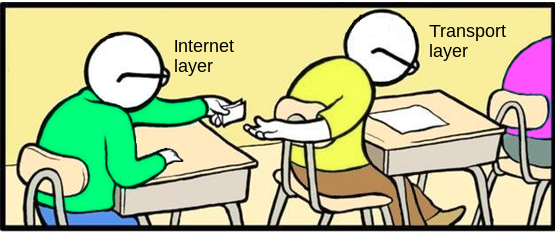
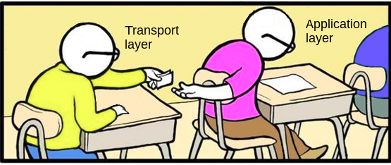
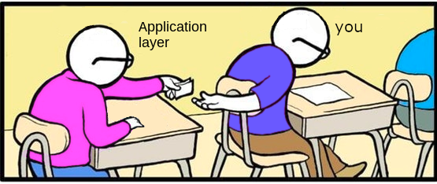
Use the last page of the activity guide to think about all of the layers we have discussed over the past several lessons. Each layer relies upon the ones below it to make the Internet work.
Using the descriptions of the layers, and what you have seen, explain how each of the different layers is involved when you go to a link like code.org.